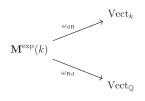
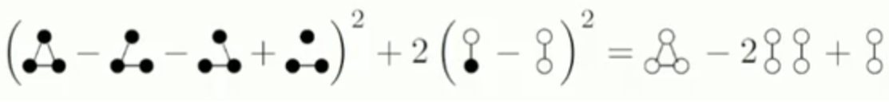

ICBS 2024 课程报告
§ 01The Langlands project
Andrew Wiles
7.15 08:30-09:30
§ 02Geometry and integers
Caucher Birkar
7.15 13:30-14:30
§ 03The chromatic number of random graphs
Annika Heckel
7.15 14:45-15:30
We define Erdős–Rényi random graph \(G_{n,p}\) as a graph with \(n\) vertices include each edge independently with probability \(p\). We study properties of random graphs like well connected, diameter, size of the largest component, size of the largest clique ... It seems that a graph parameter can take make values in principle, but is very likely contained in a short interval. See the size of largest clique in \(G_{n,\frac{1}{2}}\) is likely exactly \(=\alpha(n)\approx 2\log_2n\).
Define the Chromatic number \(\chi(G)\) as the smallest \(r\) so that \(G\) is \(r\)-partite. It's also means the smallest color numbers the vertices can choose so that for each edge of \(G\), the end points have different color. It is well known that if \(G\) is planer, then \(\chi (G)\le 4\).
So what is the Chromatic number of \(G_{n,p}\)? We cares about upper and lower bounds, and how much does \(\chi(G_n,p)\) vary?
[Bollobás'87]:
[H.'16]:
Can we show that \(\chi(G_{n,\frac{1}{2}})\) is not concentrated on 100 consecutive integers? Any non-trivial example of non-concentrated?
[H.'19]: \(\chi(G_{n,\frac{1}{2}})\) is not concentrated whp in any sequence of intervals of length \(n^{\frac{1}{4}-\epsilon}\). More formally, let \(\epsilon>0\), and let \([s_n,t_n]\) be a sequence of intervals such that \(\chi(G_{n,\frac{1}{2}})\in [s_n,t_n]\) whp. Then there are infinitely many values \(n\) such that
[H.,Riordan'21]: \(\chi(G_{n,\frac{1}{2}})\) is not concentrated whp in any sequence of intervals of length \(n^{\frac{1}{2}-\epsilon}\).
With a lot of calculation and using a new result by H.-Panagiotou 23:
[H.,Riordan'21; H.,Panagiotou'23]: \(\chi(G_{n,\frac{1}{2}})\) is not concentrated whp in any sequence of intervals of length \(C\dfrac{\sqrt{n}\log \log n}{\log^3 n}\).
The independence number \(\alpha(G)\) is the size of the largest independent vertex set (= set without edges). For most \(n\):
where
Since every color class is an independent set, so for any graph \(G\) on \(n\) vertices, \(\chi(G)\ge \frac{n}{\alpha(G)}\). In fact whp, \(\chi (G_{n,\frac{1}{2}})\approx \frac{n}{\alpha_0-3.89}\quad\)(H.'16)
§ 04The Ricci Flow
Richard Hamilton
7.16 08:30-09:30
§ 05The vanishing of the genus two summand of the cosmological constant in the perturbative supersymmetric String Theory
David Kazhdan
7.16 13:30-14:30
§ 06Interlacing Families and Ramanujan Graphs
Nikhil Srivastava
7.15 14:45-15:30
First let \(G\) be a \(d\)-regular graph on \(n\) vertices, its \(n\times n\) adjacency matrix \(A\) has real eigenvalues
It is well known that \(G\) is connected iff \(\lambda_2<d\) and \(G\) is bipartite iff \(\lambda_n=-d\). We define a graph is a spectral expander if for all nontrivial \(\lambda_i\), \(\left|\lambda_i\right|\ll d\). [Alon-Boppana'86]: Every connected \(d\)-regular graph satisfies
That means the infinite \(d\)-regular tree \(T\) is the "best" spectral expander, and for this tree, its adjacency matrix's real eigenvalues
So here is a rigorous definition: A \(d-\)regular graph is Ramanujan graph if for all nontrivial \(i\):
i.e., in this bipartite case this must hold for \(i\neq1,n\).
Fix \(d\ge 3\) and let \(G\) be a rando \(d\)-regular graph on \(n\) vertices.
[Friedman'08]: With high probability for all \(i\neq 1\), \(\left|\lambda_i(A)\right|\le 2\sqrt{d-1}+o_n(1).\)
[Chen-Garza Vargas-Tropp-van Handel'24]: Improved \(o_n(1)\) to \(n^{-1/8}\).
[J.Huang-McKenzie-H.T. Yau'24]: Improved \(o_n(1)\) to \(n^{-2/3}\)(optimal).
[Bordenave-Collins'19]: For \(H\) a random \(n\)-cover of a fixed Ramanujan graph,\(\left|\lambda_i(A_H)\right|\le 2\sqrt{d-1}+o_n(1)\).
The key object here is the expected characteristic polynomial of a random cover of a fixed d-regular graph, which turns out to be related both to the finite graph and to its universal cover. Given a Hermitian random matrix \(R\), consider the univariate polynomial
And for certain R, \(\mathbb{E}_\chi [R]\) is real-rooted and for each \(i\):
Fix \(d\ge 3\) and let \(G\) be a \(d\)-regular graph on \(n\) vertices. A 2-cover \(H\) of \(G\) is a \(d\)-regular graph on \(2n\) vertices obtained as follows:
- Create two copies \(G_1\) and \(G_2\) of \(G\).
- For each edge \(uv\in G\), place parallel edges \(u_1v_1,u_2v_2\) or crossed edges \(u_1v_2,u_2v_1\) in \(G_1\cup G_2\).
Define \(A_H\) is obtained by replacing every 1 entry of \(A_G\) by a \(2\times 2\) permutation, preserving symmetry. Then \(\lambda(A_H)=\lambda(A_G)\cup \lambda(A_s)\) where \(A_s\) is the signing of \(A\) corresponding to the permutation.At last we can prove following theorems:
Thm A. Every \(d\)-regular adjacency matrix \(A\) has a signing \(A_s\) such that
Thm B. With nonzero probability
§ 07Real groups, symmetric varieties and Langlands duality
Tsao-Hsien Chen
7.17 08:30-09:30
§ 08Rationality problems
Yuri Tschinkel
7.17 09:45-10:45
§ 09New Frontiers in Structure vs Randomness with Applications to Combinatorics, Complexity, Algorithms.
Raghu Vardhan Reddy Meka
7.17 13:30-14:30
There is a question called 3-Term Arithmetic Progression: How many numbers can we choose from \(\{1,2,\cdots,N\}\) without three equally spaced numbers? We start with 1,2. Skip 3. Add 4,5. Skip 6,7,8,9 ... We pick \(\approx N^{0.63}\) numbers!
[Erdos-Turan'36]: Subset \(A\) of \(\left\{ 1,2,\cdots,N\right\}\), \(\left| A\right|=\delta N\). How small can \(\delta\) be while guaranteeing a 3AP in \(A\)?
[Behrend'46]: \(\delta>2^{-O(\sqrt{\log N})}\).
[Roth'53]: \(\delta\approx 1/(\log \log N)\)
[Heath-Brown, Szemeredi'87-90]: \(\delta\approx 1/(\log N)^c\), \(c\) small.
[Bourgain'99,08]: \(\delta\approx 1/(\log N)^{1/2},1/(\log N)^{2/3}\).
[Sanders'11]: \(\delta\approx (\log \log N)^6/(\log N)\).
[Blook Sisask'20]: \(\delta\approx 1/(\log N)^{1+c}\) suffices.
[KM'23]: \(\delta\approx 2^{-\Omega((\log N)^{0.09})}\) suffices.
§ 10Around the Alexandrov-Fenchel Inequality
Ramon Van Handel
7.17 14:45-15:30
§ 11Euler's constant and exponential motives
Javier Fresán
7.18 08:30-09:30
We know that Euler's constant
plays an important role in Analysis. This talk here is to give some properties of \(C\), and mainly to prove that \(C\) can be express algebraically with the help of \(\pi\) and \(\log 2\).
Appell's computation rely on the fact that \(-C\) is equal to the derivative of the gamma function
at z=1. He use the notation
and prove the equality
After that he makes a mistake so the proof is not correct.
The \(n\)-th derivative of the gamma function at \(z=1\) is equal to
where \(P_n\in \mathbb{Q}(\zeta(2),\cdots,\zeta(n))[T]\) is a polynomial of degree \(n\) satisfying the recurrence relation \(P_n'=-nP_{n-1}\). We also have
where \(Q_n\) is obtained by replacing \(\zeta(k)\) with \((2^k-1)\zeta(k)\) in the coefficients of \(P_n\).
One way to think of the theory of motives is as a
or, more geometrically, for higher dimensional algebraic varieties. Exponential motives aim to be a Galois theory for integrals
or algebraic varieties along with a regular function.
Let \(k\subset \mathbb{C}\) is a subfield, \(X\) is a smooth algebraic variety over \(k\)(e.g. \(X\) affine), \(f:X\rightarrow \mathbb{A}_k^1\) a regular function. We define:
Twisted de Rham cohomology
Rapid decay homology
There is an integration pairing
which is perfect. When \(k\subset \bar{\mathbb{Q}}\), the coefficients of this pairing are called
exponential period
Following ideas of Kontsevich, and Nori, in joint work with Peter Jossen,we built a \(\mathbb{Q}\)-linear neutral tannakian category \({\mathbf{M}}^{\exp }\left( k\right)\) of exponential motives over \(k\), with fiber functors

This category contains objects \({\mathrm{H}}^{n}\left( {X,Y,f}\right)\) ,which are mapped by \({\omega }_{\mathrm{ {dR}}}\) and \({\omega }_{\mathrm{ {Rd}}}\) to twisted de Rham cohomology and rapid decay cohomology (=linear dual of rapid decay homology).
For each exponential motive \(M\), there exists an algebraic group
and an equivalence of categories
Conjecture (extension of Grothendieck's period conjecture)
However, an object \(H^n(X,f)\) can be classical for non-zero \(f\).
§ 12Quantum advantage in scientific computation?
Lin Lin
7.18 09:45-10:45
§ 13When are structures robust under randomness?
Huy Tuan Pham
7.18 14:45-15:30
§ 14Graph limits and homomorphism density inequalities
Fan Wei
7.19 08:30-09:30
We first define Graph homomorphism density.
Homomorphism density:
This variable can encode power sums of eigenvalues of a graph \(G\), number of \(q\)-colorings of \(H\), number of stables sets of H, Eulerian graph or not, max cut ...
We have a few question to ask about large graphs:
- Property testing: design fast randomized algorithms to test whether a graph has a property or not. Graph connected? Graph triangle-free? Pattern containment?
- Parameter estimation: approximate the number of triangles, the maximum cut, average degree.
- Model the large network: Erdos-Renyi random graph model \(G(n,p)\); Randomly growing graphs.
- Globally approximate a large network: a "scaled-down" description.
- Sampling (local information) implies global information?
So we define Graph limits. A graphon is a measureble symmetric function
where \([0,1]\) is set of "vertices", \(W(x,y)\) is edge weight between vertex \(x\) and vertex \(y\).
Distance on graphs to define convergence: cut norm \(\parallel \cdot\text{ } {\parallel }_{\square }\) .
Under cut norm, \(W=0.5\) is the limit of Erdos-Renyi graph \(G(n,0.5)\).
Homomorphism density to graphons. \(\Delta\) -density in \(W\):
Similarly, we define:
A kernel is a bounded measurable symmetric function \(W : {\left\lbrack 0,1\right\rbrack }^{2} \rightarrow \mathbb{R}\). Kernels are "limit" of all weighted graphs (with arbitrary edge weights). Some graph parameters can only be written as density to kernels but not graphons. Many classical extremal combinatorics questions can only be written as density inequalities in kernels. (Ramsey multiplicity, local optimizer etc). The previous fundamental theorems also "extend" to kernels.
Now we have fundamental questions: Which inequalities between subgraph densities are valid? Is there a unified algorithm to prove them? What are the extremely constructions?
-
\(t(\)\(,W)=\int W(x,y)W(x,y')dydy'dx=\int (\int W(x,y)dy)^2dx\ge 0\)
-
\(t(\)\(,W)\ge 2t(\)
 \(,W)^2-t(\)\(,W)\) since
\(,W)^2-t(\)\(,W)\) since
Fig. 1Goodman 1959图 1：Goodman [1959]
Is there a systematic way to prove graph homomorphism polynomial inequalities? Actually, for graphon, we have:
[Lovasz, Szegedy'12] Every graph homomorphism inequalities into graphons can be expressed as an infinite sum of square.
[Hatami and Norine'11] It is undecidable whether a graph homomorphism polynomial inequality holds for all graphons \(W\).
And for kernel:[Lovasz'00]: \(t(H,W)\ge 0\) for all kernels \(W\) iff H is a square.
§ 15Derived approach to highest weight categories
Alexey Bondal
7.19 09:45-10:45
§ 16From Coxeter-Conway friezes to cluster algebras
Bernhard Keller
7.19 11:00-12:00
§ 17A renormalisation group perspective on functional inequalities
Thierry Bodineau
7.19 14:45-15:30
§ 18Topology and Artificial Intelligence
Jie Wu
7.22 13:00-14:00
How could mathematics and AI do for each other?
AI for Mathematics: Help carrying out difficult calculations in math, such as computing homotopy groups, predict conjectures (say, structures of homotopy groups, patterns in spectral sequences) ...
Mathematics for AI:
- Scientific interpretation
- Improving computations— saving computing costs, or providing more meaningful supervision...
- Explore methods to get proper features of data and combine them with machine learning.
- Explore new learning models.
- Develop new mathematical theories motivated from AI.
Some fundamental problems:
- Big data brings the complexity of the world to the scientists
- The departure of AI from domain expert means that there are huge gaps between domain science and the complex reality.
- It demands New Science for AI (actually complex real world).
In topological part, the authors were able to find a new relation between algebraic and hyperbolic invariants of a knot. To achieve this they trained a classifier (predicting the curvature) on a large diverse dataset of knots and their various invariants. After training they isolate the three most relevant invariants and confirmed that they are enough for predicting curvature with the same accuracy. Finally mathematicians were able to prove the conjectured correspondence between these invariants.
The words "Topology for AI" here are given in a broader view in the sense that it includes:
- the applications of topology combined with machine learning or deep learning in data analytics
- topological deep learning
- mathematical research guided by potential applications to AI or data
This talk mainly present our research on topological foundations of high-order interaction complex networks. Properly understanding on high-order interaction is the most challenging problem in complex network. There are limited mathematical tools, by comparing with pairwise interaction networks that have many math tools from graph theory. A challenge to mathematics: traditional mathematical approaches do NOT even understand well for the 3-body problem. It demands new mathematical ideas/approaches for understanding high-order interactions.
§ 19Classification of simple separable amenable C*-algebras
Zhuang Niu
7.23 09:15-10:15
§ 20Infinitary combinatorics and finitary arithmetic
Chi Tat Chong
7.23 10:30-11:30
§ 21On A Finitary Formal Meta-theory of Meta-mathematics
Qi Feng
7.23 13:00-14:00
§ 22Random walk on dynamical percolation: separating critical and supercritial regimes
Yuval Peres
7.24 09:15-10:15
§ 23Computational Quantum Mechanics in Phase Space — An Attempt to Break the Curse of Dimensionality
Sihong Shao
7.24 10:30-11:30
§ 24A Geometrical Interpretation of Universally Quantified Inequalities and Its Applications to Different Branches of Mathematics
Raymond W. Yeung
7.25 09:15-10:15
§ 25Analysis from a boldface recursion theory point of view.
Liang Yu
7.25 10：30-11：30
§ 26Reverse-mathematical reconsideration of lower-level Borel games
Kazuyuki Tanaka
7.25 13：00-14：00
§ 27Toward a density Corradi–Hajnal theorem for degenerate hypergraphs
Jianfeng Hou
7.25 14:15-15:15
§ 28The combinatorics of finite simple groups
Tao Feng
7.25 15:30-16:30
§ 29Rainbow perfect matchings in 3-partite 3-uniform hypergraphs
Hongliang Lu
7.26 08:00-09:00
§ 30Hypergraph bipartite Turan problems
Jie Ma
7.26 09:15-10:15
PDF 原文
若下方预览无法显示，可直接打开原文件或下载后阅读。
评论